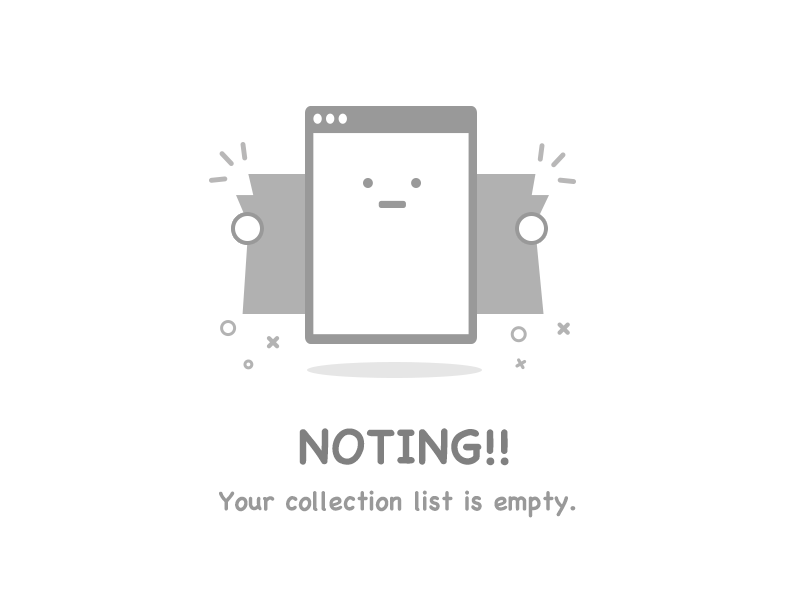

<!-- Container for flex layout -->
<div class="flex-container">
  <!-- Left flex item containing search bar and create button -->
  <div class="flex-item-left">
    <!-- Material Design form field with an outline appearance -->
    <mat-form-field class="search-bar" appearance="outline">
      <!-- Prefix icon for the search bar -->
      <mat-icon matPrefix aria-hidden="false" aria-label="Example home icon">search</mat-icon>
      <!-- Input field for the search bar -->
      <input type="text" matInput placeholder="Search" (keyup)="filterBySearchBar($event)" #input>
      <!-- Button for creating a new item; opens a dialog when clicked -->
      <button class="create-button" mat-raised-button matSuffix
        (click)="openDialog('480px', '480px', '600ms', '600ms', DialogActions.Add)">Create</button>
    </mat-form-field>
  </div>
</div>

<!-- Container for flex layout -->
<div class="flex-container-table">
  <!-- Check if there is data in the dataSource -->
  @if(this.dataSource.data.length > 0){
    <!-- Table content div when there is data -->
    <div class="table-content">
      <!-- Table with dataSource, matSort for sorting, and matSortChange event for handling sort changes -->
      <table mat-table [dataSource]="dataSource" matSort (matSortChange)="sortByColummn($event)">

        <!-- Status Column -->
        <ng-container matColumnDef="Status">
          <th mat-header-cell *matHeaderCellDef mat-sort-header sortActionDescription="Sort by Status"> Status
            <!-- Button for filtering by status -->
            <button mat-icon-button [matMenuTriggerFor]="filterByStatus" (click)="onButtonClick($event)">
              <mat-icon>filter_alt</mat-icon>
            </button>
          </th>
          <!-- Cell content for Status Column -->
          <td mat-cell *matCellDef="let element">
            <mat-checkbox class="example-margin" [value]="element.Status" color="primary" (change)="onStatusChanged(element)"
              [checked]="element.Status == TaskStatus.Completed"></mat-checkbox>
          </td>
        </ng-container>

        <!-- Name Column -->
        <ng-container matColumnDef="Name">
          <th mat-header-cell *matHeaderCellDef mat-sort-header sortActionDescription="Sort by Name"> Name </th>
          <!-- Cell content for Name Column -->
          <td mat-cell *matCellDef="let element"> {{element.Name}} </td>
        </ng-container>

        <!-- Date Column -->
        <ng-container matColumnDef="Date">
          <th mat-header-cell *matHeaderCellDef mat-sort-header sortActionDescription="Sort by Date"> Date
            <!-- Button for filtering by date -->
            <button mat-icon-button [matMenuTriggerFor]="filterByDate" (click)="onButtonClick($event)">
              <mat-icon>filter_alt</mat-icon>
            </button>
          </th>
          <!-- Cell content for Date Column -->
          <td mat-cell *matCellDef="let element"> {{element.Date | date:'MM/dd/yyyy'}} </td>
        </ng-container>

        <!-- Actions Column -->
        <ng-container matColumnDef="Actions" class="actions">
          <th mat-header-cell *matHeaderCellDef></th>
          <!-- Cell content for Actions Column -->
          <td mat-cell *matCellDef="let element">
            <button class="action-button"
              (click)="openDialog('480px', '480px', '600ms', '600ms', DialogActions.Edit, element)">
              <mat-icon>edit</mat-icon>
            </button>
            <button class="action-button"
              (click)="openDialog('480px', '340px', '600ms', '600ms', DialogActions.Delete, element)">
              <mat-icon>delete</mat-icon>
            </button>
          </td>
        </ng-container>

        <!-- Row shown when there is no matching data. -->
        <tr class="mat-row" *matNoDataRow>
          <td class="mat-cell" colspan="4">No data matching the filter "{{input.value}}"</td>
        </tr>

        <!-- Header row definition -->
        <tr mat-header-row *matHeaderRowDef="displayedColumns"></tr>

        <!-- Data row definition -->
        <tr mat-row *matRowDef="let row; columns: displayedColumns;"></tr>

      </table>

      <!-- Paginator for pagination -->
      <mat-paginator [pageSizeOptions]="[5, 10, 20]" showFirstLastButtons aria-label="Select page of periodic elements">
      </mat-paginator>
    </div>

  }

  <!-- Display an image when there is no data in the dataSource -->
  @if(this.dataSource.data.length == 0){
    
  }

</div>


<!-- Mat menu for filtering by status -->
<mat-menu #filterByStatus="matMenu">
  <!-- Loop through each status in TaskStatus enum -->
  @for (status of TaskStatus | keyvalue; track $index) {
    <!-- Menu item button for each status -->
    <button mat-menu-item (click)="filterByCol(status.value)">
      <span>{{status.value}}</span>
    </button>
  }
  <!-- Button to clear the filter -->
  <button mat-menu-item (click)="filterByCol('')">
    <mat-icon>filter_alt_off</mat-icon>
    <span>Clear filter</span>
  </button>
</mat-menu>

<!-- Mat menu for filtering by date -->
<mat-menu #filterByDate="matMenu">
  <!-- Mat form field for choosing a date -->
  <mat-form-field appearance="outline">
    <mat-label>Choose a date</mat-label>
    <!-- Input for selecting a date, linked to matDatepicker -->
    <input matInput [matDatepicker]="picker" (dateChange)="filterByDates($event)" #dateInputFilter>
    <!-- Datepicker toggle button -->
    <mat-datepicker-toggle matIconSuffix [for]="picker"></mat-datepicker-toggle>
    <!-- Mat datepicker component -->
    <mat-datepicker #picker></mat-datepicker>
  </mat-form-field>

  <!-- Button to clear the date filter -->
  <button mat-menu-item (click)="filterByCol('')">
    <mat-icon>filter_alt_off</mat-icon>
    <span>Clear filter</span>
  </button>
</mat-menu>
